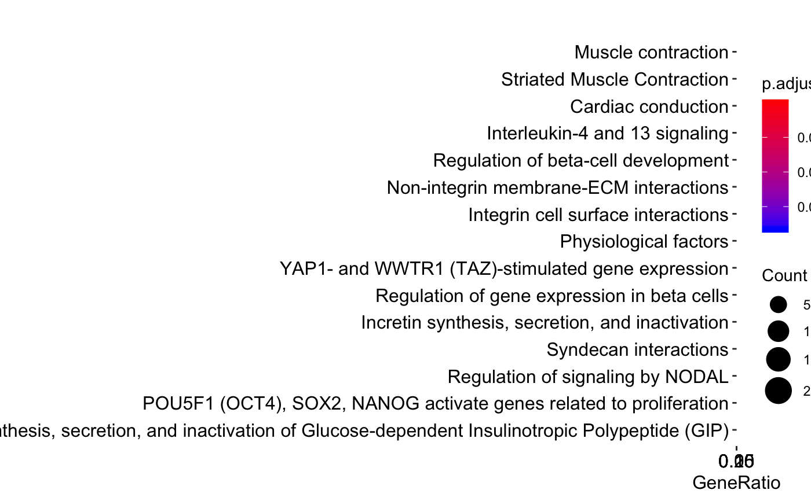

annotate_scGPS.Rdoften we need to label clusters with unique biological characters. One of the common approach to annotate a cluster is to perform functional enrichment analysis. The annotate_scGPS implements ReactomePA and clusterProfiler for this analysis type in R. The function require installation of several databases as described below.
annotate_scGPS(DEgeneList, pvalueCutoff = 0.05, gene_symbol = TRUE, species = "human")
| DEgeneList | is a vector of gene symbols, convertable to ENTREZID |
|---|---|
| pvalueCutoff | is a numeric of the cutoff p value |
| gene_symbol | logical of whether the geneList is a gene symbol |
| species | is the selection of 'human' or 'mouse', default to 'human' genes |
write enrichment test output to a file and an enrichment test object for plotting
day2 <- sample1 mixedpop1 <-NewscGPS(ExpressionMatrix = day2$dat2_counts, GeneMetadata = day2$dat2geneInfo, CellMetadata = day2$dat2_clusters) day5 <- sample2 mixedpop2 <-NewscGPS(ExpressionMatrix = day5$dat5_counts, GeneMetadata = day5$dat5geneInfo, CellMetadata = day5$dat5_clusters) genes <-GeneList genes <-genes$Merged_unique cluster_mixedpop1 <- colData(mixedpop1)[,1] cluster_mixedpop2 <- colData(mixedpop2)[,1] c_selectID <- 2 LSOLDA_dat <- bootstrap_scGPS(nboots = 2, mixedpop1 = mixedpop1, mixedpop2 = mixedpop2, genes=genes, listData =list(), cluster_mixedpop1 = cluster_mixedpop1, cluster_mixedpop2 = cluster_mixedpop2, c_selectID = c_selectID)#> [1] "Total 203 cells as source subpop" #> [1] "Total 387 cells in remaining subpops" #> [1] "subsampling 102 cells for training source subpop" #> [1] "subsampling 102 cells in remaining subpops for training" #> [1] "use 6 genes for training model" #> [1] "use 6 genes 204 cells for testing model" #> [1] "rename remaining subpops to 1_3" #> [1] "there are 102 cells in class 1_3 and 102 cells in class 2" #> [1] "standardizing prediction/target dataset" #> [1] "performning elasticnet model training..." #> [1] "performning LDA model training..."#>#>#> Warning: variables are collinear#> Warning: variables are collinear#> Warning: variables are collinear#> Warning: variables are collinear#> Warning: variables are collinear#> Warning: variables are collinear#> Warning: variables are collinear#> Warning: variables are collinear#> Warning: variables are collinear#> Warning: variables are collinear#> Warning: variables are collinear#> Warning: variables are collinear#> Warning: variables are collinear#> Warning: variables are collinear#> Warning: variables are collinear#> Warning: variables are collinear#> Warning: variables are collinear#> Warning: variables are collinear#> Warning: variables are collinear#> Warning: variables are collinear#> Warning: variables are collinear#> Warning: variables are collinear#> Warning: variables are collinear#> Warning: variables are collinear#> Warning: variables are collinear#> Warning: variables are collinear#> Warning: variables are collinear#> Warning: variables are collinear#> Warning: variables are collinear#> Warning: variables are collinear#> Warning: variables are collinear#> [1] "extracting deviance and best gene features..." #> #> Call: glmnet(x = as.matrix(dataset[, -which(colnames(dataset) == "Cluster_class")]), y = as.vector(dataset$Cluster_class), family = "binomial") #> #> Df %Dev Lambda #> [1,] 0 -3.684e-15 0.112100 #> [2,] 2 9.346e-03 0.102100 #> [3,] 2 1.799e-02 0.093030 #> [4,] 2 2.519e-02 0.084770 #> [5,] 2 3.120e-02 0.077240 #> [6,] 2 3.623e-02 0.070380 #> [7,] 3 4.066e-02 0.064130 #> [8,] 3 4.445e-02 0.058430 #> [9,] 3 4.763e-02 0.053240 #> [10,] 3 5.030e-02 0.048510 #> [11,] 4 5.278e-02 0.044200 #> [12,] 4 5.499e-02 0.040270 #> [13,] 5 5.747e-02 0.036690 #> [14,] 5 5.966e-02 0.033430 #> [15,] 5 6.152e-02 0.030460 #> [16,] 5 6.308e-02 0.027760 #> [17,] 5 6.440e-02 0.025290 #> [18,] 5 6.552e-02 0.023050 #> [19,] 5 6.646e-02 0.021000 #> [20,] 5 6.725e-02 0.019130 #> [21,] 5 6.791e-02 0.017430 #> [22,] 5 6.847e-02 0.015880 #> [23,] 5 6.894e-02 0.014470 #> [24,] 5 6.933e-02 0.013190 #> [25,] 5 6.966e-02 0.012020 #> [26,] 5 6.994e-02 0.010950 #> [27,] 5 7.017e-02 0.009976 #> [28,] 5 7.037e-02 0.009090 #> [29,] 5 7.053e-02 0.008282 #> [30,] 5 7.067e-02 0.007546 #> [31,] 5 7.078e-02 0.006876 #> [32,] 5 7.088e-02 0.006265 #> [33,] 5 7.096e-02 0.005709 #> [34,] 5 7.102e-02 0.005201 #> [35,] 5 7.108e-02 0.004739 #> [36,] 5 7.112e-02 0.004318 #> [37,] 5 7.116e-02 0.003935 #> [38,] 5 7.120e-02 0.003585 #> [39,] 5 7.122e-02 0.003267 #> [40,] 5 7.124e-02 0.002976 #> [41,] 5 7.126e-02 0.002712 #> [42,] 5 7.128e-02 0.002471 #> [43,] 5 7.129e-02 0.002252 #> [44,] 5 7.130e-02 0.002052 #> [45,] 5 7.131e-02 0.001869 #> [1] "lambda min is at location 39" #> [1] "the leave-out cells in the source subpop is 101" #> [1] "use 102 target subpops cells for leave-out test set" #> [1] "standardizing the leave-out target and source subpops..." #> [1] "start ElasticNet prediction for estimating accuracy..." #> [1] "start LDA prediction for estimating accuracy for 195 cells and 6 genes..." #> [1] "evaluation accuracy ElasticNet 0.661538461538462" #> [1] "evaluation accuracy LDA 0.656410256410256" #> [1] "done training for bootstrap 1, moving to prediction..." #> [1] "standardizing target subpops before prediction..." #> [1] "predicting from source to target subpop 1..." #> [1] "number of cells in the target subpop 1 is 187" #> [1] "Number of genes in the target data, but not in model genes is 4994" #> [1] "Number of genes in the model present in the target data is 6" #> [1] "There are 0 genes that are in the model, but not in target subpopulations" #> [1] "the prediction (target) subop has 6 genes and 187 cells. The trained model has 6 genes" #> [1] "first 10 genes in model " #> [1] "GATA4" "VIM" "SNAI2" "GJA1" "MAP2" "TMEM88" #> [1] "first 10 genes in target " #> [1] "GATA4" "VIM" "SNAI2" "GJA1" "MAP2" "TMEM88" #> [1] "running elasticNet classification..." #> [1] "ElasticNet for target subpop 1 has no solution" #> [1] "Number of genes in the target data, but not in model genes is 4994" #> [1] "Number of genes in the model present in the target data is 6" #> [1] "There are 0 genes that are in the model, but not in target subpopulations" #> [1] "the prediction (target) subop has 6 genes and 187 cells. The trained model has 6 genes" #> [1] "first 10 genes in model " #> [1] "GATA4" "VIM" "SNAI2" "GJA1" "MAP2" "TMEM88" #> [1] "first 10 genes in target " #> [1] "GATA4" "VIM" "SNAI2" "GJA1" "MAP2" "TMEM88" #> [1] "running LDA classification..." #> [1] "class probability prediction LDA for target subpop 1 is 68.4491978609626" #> [1] "predicting from source to target subpop 2..." #> [1] "number of cells in the target subpop 2 is 140" #> [1] "Number of genes in the target data, but not in model genes is 4994" #> [1] "Number of genes in the model present in the target data is 6" #> [1] "There are 0 genes that are in the model, but not in target subpopulations" #> [1] "the prediction (target) subop has 6 genes and 140 cells. The trained model has 6 genes" #> [1] "first 10 genes in model " #> [1] "GATA4" "VIM" "SNAI2" "GJA1" "MAP2" "TMEM88" #> [1] "first 10 genes in target " #> [1] "GATA4" "VIM" "SNAI2" "GJA1" "MAP2" "TMEM88" #> [1] "running elasticNet classification..." #> [1] "class probability prediction ElasticNet for target subpop 2 is 8.57142857142857" #> [1] "Number of genes in the target data, but not in model genes is 4994" #> [1] "Number of genes in the model present in the target data is 6" #> [1] "There are 0 genes that are in the model, but not in target subpopulations" #> [1] "the prediction (target) subop has 6 genes and 140 cells. The trained model has 6 genes" #> [1] "first 10 genes in model " #> [1] "GATA4" "VIM" "SNAI2" "GJA1" "MAP2" "TMEM88" #> [1] "first 10 genes in target " #> [1] "GATA4" "VIM" "SNAI2" "GJA1" "MAP2" "TMEM88" #> [1] "running LDA classification..." #> [1] "class probability prediction LDA for target subpop 2 is 4.28571428571429" #> [1] "predicting from source to target subpop 3..." #> [1] "number of cells in the target subpop 3 is 133" #> [1] "Number of genes in the target data, but not in model genes is 4994" #> [1] "Number of genes in the model present in the target data is 6" #> [1] "There are 0 genes that are in the model, but not in target subpopulations" #> [1] "the prediction (target) subop has 6 genes and 133 cells. The trained model has 6 genes" #> [1] "first 10 genes in model " #> [1] "GATA4" "VIM" "SNAI2" "GJA1" "MAP2" "TMEM88" #> [1] "first 10 genes in target " #> [1] "GATA4" "VIM" "SNAI2" "GJA1" "MAP2" "TMEM88" #> [1] "running elasticNet classification..." #> [1] "class probability prediction ElasticNet for target subpop 3 is 81.9548872180451" #> [1] "Number of genes in the target data, but not in model genes is 4994" #> [1] "Number of genes in the model present in the target data is 6" #> [1] "There are 0 genes that are in the model, but not in target subpopulations" #> [1] "the prediction (target) subop has 6 genes and 133 cells. The trained model has 6 genes" #> [1] "first 10 genes in model " #> [1] "GATA4" "VIM" "SNAI2" "GJA1" "MAP2" "TMEM88" #> [1] "first 10 genes in target " #> [1] "GATA4" "VIM" "SNAI2" "GJA1" "MAP2" "TMEM88" #> [1] "running LDA classification..." #> [1] "class probability prediction LDA for target subpop 3 is 50.3759398496241" #> [1] "predicting from source to target subpop 4..." #> [1] "number of cells in the target subpop 4 is 40" #> [1] "Number of genes in the target data, but not in model genes is 4994" #> [1] "Number of genes in the model present in the target data is 6" #> [1] "There are 0 genes that are in the model, but not in target subpopulations" #> [1] "the prediction (target) subop has 6 genes and 40 cells. The trained model has 6 genes" #> [1] "first 10 genes in model " #> [1] "GATA4" "VIM" "SNAI2" "GJA1" "MAP2" "TMEM88" #> [1] "first 10 genes in target " #> [1] "GATA4" "VIM" "SNAI2" "GJA1" "MAP2" "TMEM88" #> [1] "running elasticNet classification..." #> [1] "class probability prediction ElasticNet for target subpop 4 is 70" #> [1] "Number of genes in the target data, but not in model genes is 4994" #> [1] "Number of genes in the model present in the target data is 6" #> [1] "There are 0 genes that are in the model, but not in target subpopulations" #> [1] "the prediction (target) subop has 6 genes and 40 cells. The trained model has 6 genes" #> [1] "first 10 genes in model " #> [1] "GATA4" "VIM" "SNAI2" "GJA1" "MAP2" "TMEM88" #> [1] "first 10 genes in target " #> [1] "GATA4" "VIM" "SNAI2" "GJA1" "MAP2" "TMEM88" #> [1] "running LDA classification..." #> [1] "class probability prediction LDA for target subpop 4 is 35" #> [1] "Total 203 cells as source subpop" #> [1] "Total 387 cells in remaining subpops" #> [1] "subsampling 102 cells for training source subpop" #> [1] "subsampling 102 cells in remaining subpops for training" #> [1] "use 6 genes for training model" #> [1] "use 6 genes 204 cells for testing model" #> [1] "rename remaining subpops to 1_3" #> [1] "there are 102 cells in class 1_3 and 102 cells in class 2" #> [1] "removing 1 genes with no variance" #> [1] "standardizing prediction/target dataset" #> [1] "performning elasticnet model training..." #> [1] "performning LDA model training..."#> Warning: variables are collinear#> Warning: variables are collinear#> Warning: variables are collinear#> Warning: variables are collinear#> Warning: variables are collinear#> Warning: variables are collinear#> Warning: variables are collinear#> Warning: variables are collinear#> Warning: variables are collinear#> Warning: variables are collinear#> Warning: variables are collinear#> Warning: variables are collinear#> Warning: variables are collinear#> Warning: variables are collinear#> Warning: variables are collinear#> Warning: variables are collinear#> Warning: variables are collinear#> Warning: variables are collinear#> Warning: variables are collinear#> Warning: variables are collinear#> Warning: variables are collinear#> Warning: variables are collinear#> Warning: variables are collinear#> Warning: variables are collinear#> Warning: variables are collinear#> Warning: variables are collinear#> Warning: variables are collinear#> Warning: variables are collinear#> Warning: variables are collinear#> Warning: variables are collinear#> Warning: variables are collinear#> [1] "extracting deviance and best gene features..." #> #> Call: glmnet(x = as.matrix(dataset[, -which(colnames(dataset) == "Cluster_class")]), y = as.vector(dataset$Cluster_class), family = "binomial") #> #> Df %Dev Lambda #> [1,] 0 3.204e-15 0.148500 #> [2,] 1 1.081e-02 0.135300 #> [3,] 2 2.067e-02 0.123300 #> [4,] 2 2.912e-02 0.112300 #> [5,] 2 3.618e-02 0.102300 #> [6,] 2 4.206e-02 0.093250 #> [7,] 2 4.697e-02 0.084970 #> [8,] 2 5.108e-02 0.077420 #> [9,] 2 5.450e-02 0.070540 #> [10,] 2 5.737e-02 0.064270 #> [11,] 2 5.977e-02 0.058560 #> [12,] 2 6.177e-02 0.053360 #> [13,] 2 6.344e-02 0.048620 #> [14,] 2 6.483e-02 0.044300 #> [15,] 2 6.600e-02 0.040370 #> [16,] 2 6.697e-02 0.036780 #> [17,] 2 6.778e-02 0.033510 #> [18,] 2 6.846e-02 0.030540 #> [19,] 2 6.902e-02 0.027820 #> [20,] 2 6.949e-02 0.025350 #> [21,] 2 6.988e-02 0.023100 #> [22,] 4 7.050e-02 0.021050 #> [23,] 4 7.117e-02 0.019180 #> [24,] 4 7.173e-02 0.017470 #> [25,] 4 7.220e-02 0.015920 #> [26,] 4 7.259e-02 0.014510 #> [27,] 4 7.292e-02 0.013220 #> [28,] 4 7.319e-02 0.012040 #> [29,] 4 7.341e-02 0.010970 #> [30,] 4 7.360e-02 0.009999 #> [31,] 4 7.376e-02 0.009111 #> [32,] 4 7.389e-02 0.008301 #> [33,] 4 7.400e-02 0.007564 #> [34,] 4 7.409e-02 0.006892 #> [35,] 4 7.416e-02 0.006280 #> [36,] 4 7.422e-02 0.005722 #> [37,] 4 7.428e-02 0.005213 #> [38,] 4 7.432e-02 0.004750 #> [39,] 4 7.436e-02 0.004328 #> [40,] 4 7.439e-02 0.003944 #> [41,] 4 7.441e-02 0.003593 #> [42,] 4 7.443e-02 0.003274 #> [43,] 4 7.445e-02 0.002983 #> [44,] 4 7.446e-02 0.002718 #> [45,] 4 7.448e-02 0.002477 #> [46,] 4 7.449e-02 0.002257 #> [1] "lambda min is at location 37" #> [1] "the leave-out cells in the source subpop is 101" #> [1] "use 102 target subpops cells for leave-out test set" #> [1] "standardizing the leave-out target and source subpops..." #> [1] "start ElasticNet prediction for estimating accuracy..." #> [1] "start LDA prediction for estimating accuracy for 195 cells and 5 genes..." #> [1] "evaluation accuracy ElasticNet 0.6" #> [1] "evaluation accuracy LDA 0.6" #> [1] "done training for bootstrap 2, moving to prediction..." #> [1] "standardizing target subpops before prediction..." #> [1] "predicting from source to target subpop 1..." #> [1] "number of cells in the target subpop 1 is 187" #> [1] "Number of genes in the target data, but not in model genes is 4995" #> [1] "Number of genes in the model present in the target data is 5" #> [1] "There are 0 genes that are in the model, but not in target subpopulations" #> [1] "the prediction (target) subop has 5 genes and 187 cells. The trained model has 5 genes" #> [1] "first 10 genes in model " #> [1] "GATA4" "VIM" "SNAI2" "GJA1" "TMEM88" #> [1] "first 10 genes in target " #> [1] "GATA4" "VIM" "SNAI2" "GJA1" "TMEM88" #> [1] "running elasticNet classification..." #> [1] "class probability prediction ElasticNet for target subpop 1 is 65.7754010695187" #> [1] "Number of genes in the target data, but not in model genes is 4995" #> [1] "Number of genes in the model present in the target data is 5" #> [1] "There are 0 genes that are in the model, but not in target subpopulations" #> [1] "the prediction (target) subop has 5 genes and 187 cells. The trained model has 5 genes" #> [1] "first 10 genes in model " #> [1] "GATA4" "VIM" "SNAI2" "GJA1" "TMEM88" #> [1] "first 10 genes in target " #> [1] "GATA4" "VIM" "SNAI2" "GJA1" "TMEM88" #> [1] "running LDA classification..." #> [1] "class probability prediction LDA for target subpop 1 is 98.3957219251337" #> [1] "predicting from source to target subpop 2..." #> [1] "number of cells in the target subpop 2 is 140" #> [1] "Number of genes in the target data, but not in model genes is 4995" #> [1] "Number of genes in the model present in the target data is 5" #> [1] "There are 0 genes that are in the model, but not in target subpopulations" #> [1] "the prediction (target) subop has 5 genes and 140 cells. The trained model has 5 genes" #> [1] "first 10 genes in model " #> [1] "GATA4" "VIM" "SNAI2" "GJA1" "TMEM88" #> [1] "first 10 genes in target " #> [1] "GATA4" "VIM" "SNAI2" "GJA1" "TMEM88" #> [1] "running elasticNet classification..." #> [1] "class probability prediction ElasticNet for target subpop 2 is 35" #> [1] "Number of genes in the target data, but not in model genes is 4995" #> [1] "Number of genes in the model present in the target data is 5" #> [1] "There are 0 genes that are in the model, but not in target subpopulations" #> [1] "the prediction (target) subop has 5 genes and 140 cells. The trained model has 5 genes" #> [1] "first 10 genes in model " #> [1] "GATA4" "VIM" "SNAI2" "GJA1" "TMEM88" #> [1] "first 10 genes in target " #> [1] "GATA4" "VIM" "SNAI2" "GJA1" "TMEM88" #> [1] "running LDA classification..." #> [1] "class probability prediction LDA for target subpop 2 is 29.2857142857143" #> [1] "predicting from source to target subpop 3..." #> [1] "number of cells in the target subpop 3 is 133" #> [1] "Number of genes in the target data, but not in model genes is 4995" #> [1] "Number of genes in the model present in the target data is 5" #> [1] "There are 0 genes that are in the model, but not in target subpopulations" #> [1] "the prediction (target) subop has 5 genes and 133 cells. The trained model has 5 genes" #> [1] "first 10 genes in model " #> [1] "GATA4" "VIM" "SNAI2" "GJA1" "TMEM88" #> [1] "first 10 genes in target " #> [1] "GATA4" "VIM" "SNAI2" "GJA1" "TMEM88" #> [1] "running elasticNet classification..." #> [1] "class probability prediction ElasticNet for target subpop 3 is 98.4962406015038" #> [1] "Number of genes in the target data, but not in model genes is 4995" #> [1] "Number of genes in the model present in the target data is 5" #> [1] "There are 0 genes that are in the model, but not in target subpopulations" #> [1] "the prediction (target) subop has 5 genes and 133 cells. The trained model has 5 genes" #> [1] "first 10 genes in model " #> [1] "GATA4" "VIM" "SNAI2" "GJA1" "TMEM88" #> [1] "first 10 genes in target " #> [1] "GATA4" "VIM" "SNAI2" "GJA1" "TMEM88" #> [1] "running LDA classification..." #> [1] "class probability prediction LDA for target subpop 3 is 93.2330827067669" #> [1] "predicting from source to target subpop 4..." #> [1] "number of cells in the target subpop 4 is 40" #> [1] "Number of genes in the target data, but not in model genes is 4995" #> [1] "Number of genes in the model present in the target data is 5" #> [1] "There are 0 genes that are in the model, but not in target subpopulations" #> [1] "the prediction (target) subop has 5 genes and 40 cells. The trained model has 5 genes" #> [1] "first 10 genes in model " #> [1] "GATA4" "VIM" "SNAI2" "GJA1" "TMEM88" #> [1] "first 10 genes in target " #> [1] "GATA4" "VIM" "SNAI2" "GJA1" "TMEM88" #> [1] "running elasticNet classification..." #> [1] "class probability prediction ElasticNet for target subpop 4 is 85" #> [1] "Number of genes in the target data, but not in model genes is 4995" #> [1] "Number of genes in the model present in the target data is 5" #> [1] "There are 0 genes that are in the model, but not in target subpopulations" #> [1] "the prediction (target) subop has 5 genes and 40 cells. The trained model has 5 genes" #> [1] "first 10 genes in model " #> [1] "GATA4" "VIM" "SNAI2" "GJA1" "TMEM88" #> [1] "first 10 genes in target " #> [1] "GATA4" "VIM" "SNAI2" "GJA1" "TMEM88" #> [1] "running LDA classification..." #> [1] "class probability prediction LDA for target subpop 4 is 77.5"enrichment_test <- annotate_scGPS(genes, pvalueCutoff=0.05, gene_symbol=TRUE, species = 'human')#>#>#>#>#>#> Warning: 5.7% of input gene IDs are fail to map...#> [1] "Original gene number in geneList" #> [1] 158 #> [1] "Number of genes successfully converted" #> [1] 149